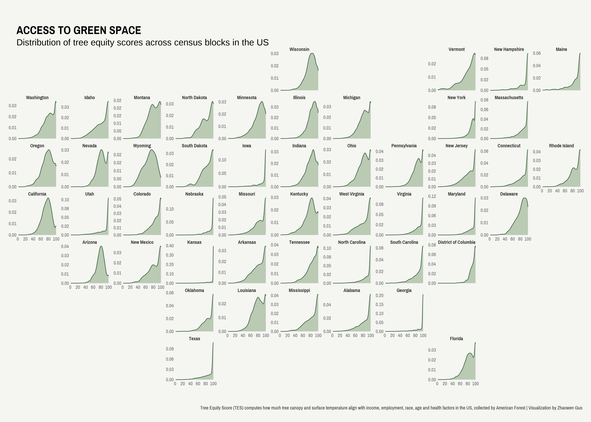

Last week, I introduced how to visualize disparities in tree equity scores using hexbin maps. Hexbin maps are a useful tool for visualizing dense data points by summarizing them in a compact and understandable format. By grouping data points into hexagonal bins, they provide a clear picture of the spatial distribution of the data, enabling the detection of patterns that may be hidden by overplotting.
Although hexagonal bins provide a clean representation of data, they result in information loss regarding the underlying shape of the data. For example, my previous visual using hexbin maps suggests that Ohio has the largest tree equity gap, which is defined as the maximum difference across block-level tree equity scores. However, this does not provide a complete picture. When examining the distribution of tree equity scores across census blocks within each state, it is evident that Ohio has a considerable number of blocks with relatively high levels of tree equity, indicating that Ohio performs well in this regard.
Geofacet offers a useful alternative to hexbin maps, allowing for the restoration of the original data distributions while preserving the spatial information. By maintaining individual data points, geofacet provides a more detailed representation of data to enable a more nuanced view of spatial relationships.
In this blog post, I will walk you through how to visualize tree equity score data using geofacet. All code can be found here.
Data Collection
We follow similar steps of data collection and the only difference is we keep the original variable - tree equity score.
```{r}
# prepare a function to read zip urls with shapefiles
read_shape_URL <- function(URL){
cur_tempfile <- tempfile()
download.file(url = URL, destfile = cur_tempfile)
out_directory <- tempfile()
unzip(cur_tempfile, exdir = out_directory)
read_sf(dsn = out_directory)
}
# pull state, tes, priority from each dataframe
data_lists <- list()
for (i in 1:nrow(states)){
state <- states$lower_code[i]
print(state)
URL <- paste0("https://national-tes-data-share.s3.amazonaws.com/national_tes_share/", state, ".zip.zip")
if (RCurl::url.exists(URL) == T) {
map <- read_shape_URL(paste0("https://national-tes-data-share.s3.amazonaws.com/national_tes_share/", state, ".zip.zip"))
data_lists[[i]] <- map %>% select(tes, state, priority)
}
}
data <- do.call(rbind, data_lists) %>% na.omit()
```Data Visualization
The function facet_geo() plays the magic, which creates the base map of the US that can be integrated with various data representations. By using the argument grid = us_state_grid1[c(-2, -11), ], we can exclude Hawaii and Alaska from the map as there is no data available for these states. If you prefer to have the full state name, you can add the argument label = "name".
Another thing to keep in mind is that the facet_geo() layer should integrate with a pre-existing data representation. In this example where I am interested in displaying the distribution of tree equity scores, I add geom_density() layer beforehand.
```{r}
ggplot(data) +
geom_density(aes(x = tes), color = "#466c4b", fill = "#7fa074", alpha = 0.5) +
coord_cartesian(clip = "off") +
facet_geo(vars(state), scales = "free_y", grid = us_state_grid1[c(-2, -11), ], label = "name") +
scale_x_continuous(breaks = seq(0, 100, 20)) +
scale_y_continuous(
labels = scales::number_format(accuracy = 0.01)) +
labs(x = "", y = "",
title = "ACCESS TO GREEN SPACE",
subtitle = "Distribution of tree equity scores across census blocks in the US",
caption = str_wrap("
Tree Equity Score (TES) computes how much tree canopy and surface temperature align with income,
employment, race, age and health factors in the US, collected by American Forest | Visualization by Zhaowen Guo", width = 300)) +
theme_void(base_family = "Pragati Narrow") +
theme(strip.text = element_text(face = "bold", color = "grey20", size = 30),
legend.position = "none",
axis.text = element_text(color = "grey40", size = 30),
strip.background = element_blank(),
plot.background = element_rect(fill = "#f5f5f2", color = NA),
plot.margin = margin(40, 15, 20, 15),
plot.title = element_text(face = "bold", size = 70, margin = margin(l=0, t=5)),
plot.subtitle = element_text(lineheight = 1, size = 50, margin(l=0, t=7)),
plot.caption = element_text(margin = margin(t=35), color = "grey20", size = 30),
plot.caption.position = "plot")
ggsave("tree-equity-geofacet.png", dpi = 320, width = 14, height = 10)
```